WARNING
NEVER connect or switch on shore power while the induction cooktop is in use!
The cooktop runs from the inverter through the automatic transfer switch (AVR). If shore power is added, the AVR switches over under full load – this wears out its contacts very quickly. First switch the induction cooktop off completely, then connect or switch on shore power.
- The lift table (bed) only moves when the support leg is unfolded. Before it moves, the table lamp flashes for 4 seconds – keep hands and objects clear of its path. STOP always works.
- The gas, smoke, CO and CO2 alarms work on their own, independently of the intruder alarm. On a gas alarm the camper is automatically ventilated hard.
- The factory PIN is 0000 – please change it right after handover (chapter 13). The same PIN is used for the alarm, STBY, the service test and calibration.
1 Tap a number on a screen, or an item in its list, to see where it is and what it does.
1Basic operation
- Tap = switch or open. Hold 3 s = open the detail screen (hint “hold 3 s ▶”).
- BACK at the top left takes you back. The ? in every header opens a short guide for the current screen. To close it, tap outside the window or on ✕.
- The language (English/German) is chosen under Settings → Display. Some technical labels stay in English even in German mode (e.g. BACK, SETUP, SAVE).
- After 10 seconds without touch the normal screens (battery, lights, heater …) return to the home screen by themselves. Settings screens stay open, as do levelling, diagnostics, modules, radar and the PIN entry during an alarm or countdown.
- Settings are saved permanently as soon as you leave the screen with BACK and are kept after a restart. Where there is a SAVE button, press it after making changes.
Colours
| Colour | Meaning |
|---|---|
| Green | on / OK / charging |
| Orange | active with a note (e.g. discharging, heater cooling down, STBY active) |
| Yellow | attention (e.g. valve open, value raised) |
| Red | alarm, fault or limit exceeded |
| Grey / “--” | off, or no connection to the module (offline) |
2Home screen
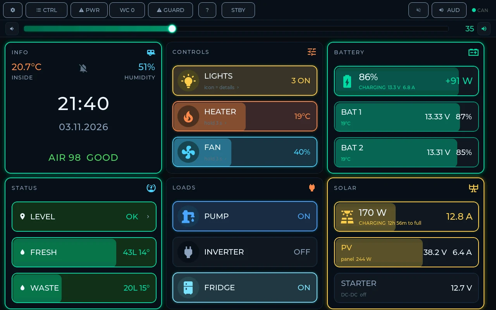
Opens the settings (chapter 18).
Opens the CONTROLS screen with all loads (chapter 4).
Battery protection, bus bars and shore power values (chapter 12).
Each tap steps AUTO → ON → OFF → AUTO. “WC n” = AUTO at level n, “WC A” = AUTO paused (nobody inside), “WC ON” (orange), “WC OFF” (red), “WC --” = offline.
Opens the guard (chapter 14). Green = armed, red/yellow flashing = alarm, grey = offline.
Short guide for the home screen.
Transport mode on/off (chapter 3).
Audio power (amplifier/subwoofer) on/off. Green = on. Shows the actual state of the system.
Opens the sound settings (chapter 17).
Green when vehicle data is being received.
Mute on the left, the 0–100 slider with a number in the middle, and a button for full volume (100) on the right.
Time, date, inside temperature, humidity and air quality. Tapping the clock or date opens SET DATE / TIME. When the air pressure falls fast, the AIR line shows “STORM -x.x hPa” (orange).
Orange with the time (e.g. “07:00”) when the alarm is on, dim when off. Tap to set the alarm.
Tap the tile = all lights on/off (if any is on, all go off). Tap the symbol = lights screen.
Tap the round icon = on/off, hold the tile 3 s = detail screen. Swipe across the tile to set power 1–10. Shows POWER… / START… / room temperature / STOP… / COOLING / CUT m:ss.
Tap the icon = on/off, hold 3 s = roof fan screen. Swipe across the tile: 0–100 % (both roof fans, front in, rear out, lids open; 0 = off, lids closed).
Total of both batteries: state of charge, CHARGING / DISCHARGING, voltage, current and power. Below that BAT 1 and BAT 2. Tap to open details.
OK = level, TILT = not level. Tap to open levelling.
Bar = fill level, plus litres and water temperature. Red when fresh water is ≤ 15 % or waste water is ≥ 85 %.
PUMP, INVERTER, FRIDGE. Tap = on/off.
Power actually going into the battery (yellow = charging) with the time until full; PV = solar panel; STARTER = starter battery and charging from the alternator (DC-DC). Tap to open details.
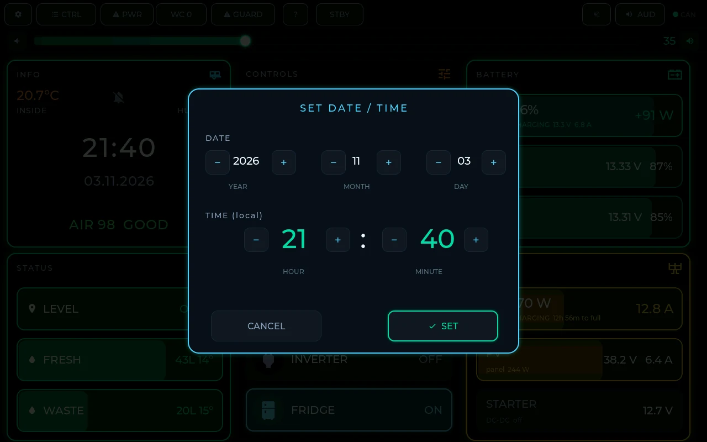
Year, month and day with − / +.
Hour and minute with − / +.
Sets the clock (local time). CANCEL leaves it unchanged.
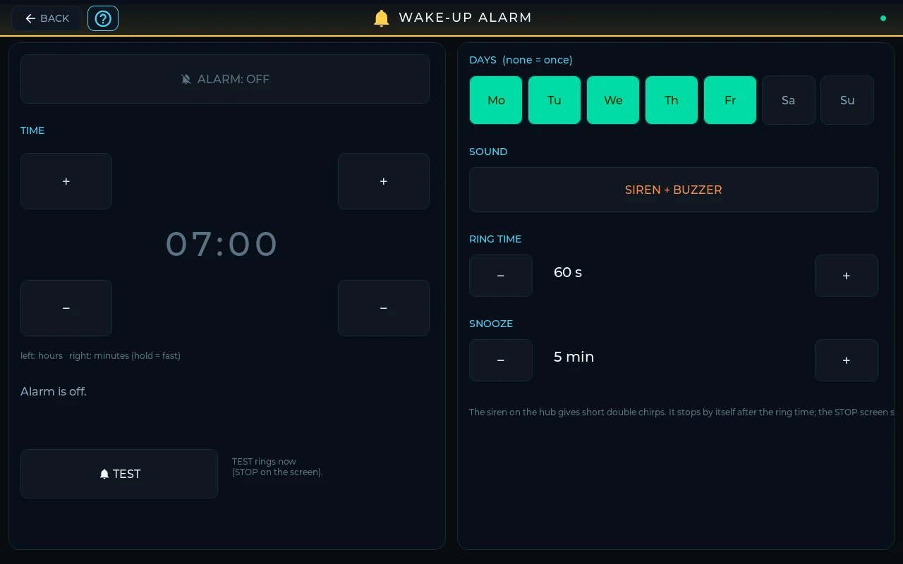
Switches the wake-up alarm on or off.
+ / − on the left = hours, on the right = minutes (hold = 5-minute steps).
Green days ring. No day selected = rings once and then switches itself off.
SIREN + BUZZER or BUZZER ONLY (quiet).
30–180 s (the siren stops by itself).
5–30 min.
Rings at once.
When the wake-up alarm rings, the screen lights up and shows big STOP and SNOOZE x MIN buttons. Settings are saved with BACK. The hub must be connected (red dot = no siren).
Screensaver
After 1 minute without touch the display dims and shows the clock, temperature, air quality, humidity and the battery level with “… to empty” or “… to full”. A tap wakes the display; this first tap does nothing else. The display never goes completely black. With Charge wake (chapter 18) it stays bright while charging.
3STBY – transport mode
For driving: tapping STBY on the home screen asks for confirmation; STBY ON switches off (CANCEL or tapping next to it = nothing happens):
- all lights, boiler, inverter, water pump, WC fan, diesel heater (it cools down first)
- both roof fans – the lids are closed
Stays on: the fridge. Switching off (e.g. heater STOP) always works in STBY, switching on only with the PIN; the thermostat pauses. Audio and the shore power charger are not switched.
Locked during STBY: all tiles and buttons for loads (a tap opens the PIN entry), the WC button, lights ON, heater START. STOP on the lift table and lights OFF always work. Automatic functions (away mode, CO2 ventilation, thermostat) pause. The gas purge keeps working.
To end it: tap STBY again → enter the 4-digit PIN → “✓ STBY OFF”. This also works on the wall panels (after 3 wrong attempts they lock for 30 seconds). STBY stays active even after a restart. After STBY OFF the loads stay off – switch them back on by hand.
4CONTROLS – loads
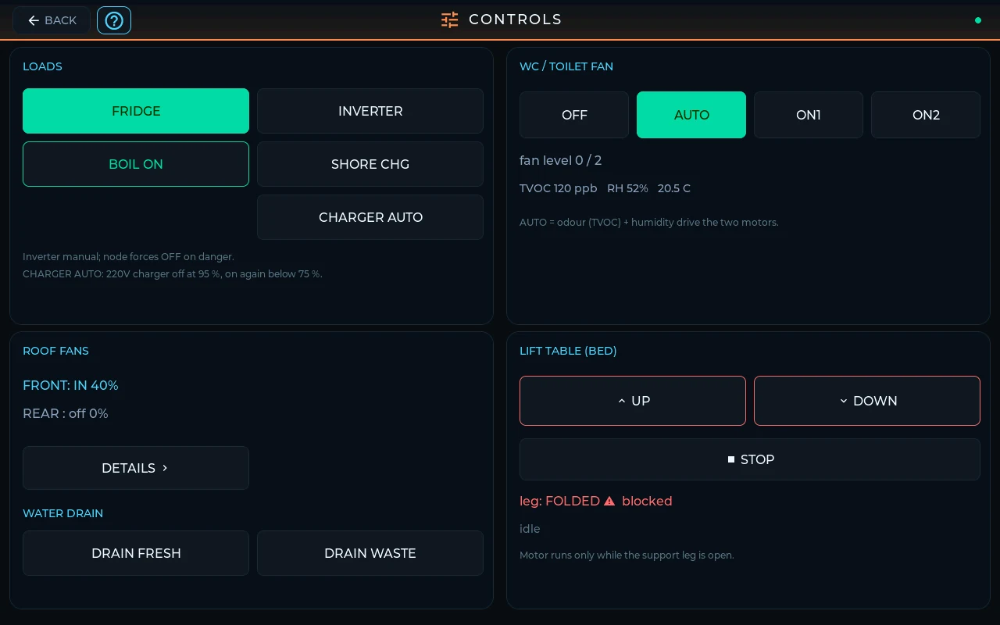
Fridge on/off. The state is kept even after a restart.
Inverter (230 V) – always switched on by hand. The system switches it off when there is danger (bus bar too hot), when nobody is home and in STBY, but never switches it back on by itself.
BOIL ON / BOIL OFF – simply switch on and off. The state is kept after a restart. Optionally the away automation switches it off and on again (chapter 16).
230 V charger on/off (by hand). A tap ends CHARGER AUTO.
The charger is switched automatically: OFF at 95 % battery, ON again below 75 %.
OFF / AUTO / ON1 / ON2. ON1 = level 1, ON2 = both motors. AUTO: odour (TVOC) and humidity control the fan; when nobody is in the vehicle, AUTO pauses. A manual choice always wins.
Front/rear status and a button to the roof fan screen (chapter 8).
DRAIN FRESH and DRAIN WASTE open or close the drain valve – immediately, without asking. While a valve is open the button is yellow (“… DRAINING”). Tap again to close.
▲ UP / ▼ DOWN. Only moves when the support leg is unfolded (“leg: OPEN ✓ ready”). The table lamp flashes for 4 seconds as a warning, then the motor runs. It stops automatically after 45 seconds.
STOP works at any time, even in STBY.
Green = on. If the control module rejects a command, the button springs back.
5Lights
Tap = channel on/off. Hold = set brightness 0–100 %, close with ✓ DONE. CH6 = table lamp / lift table warning light.
All channels on.
All channels off.
Automatic dimming when nobody is in the vehicle on/off.
Lights settings.
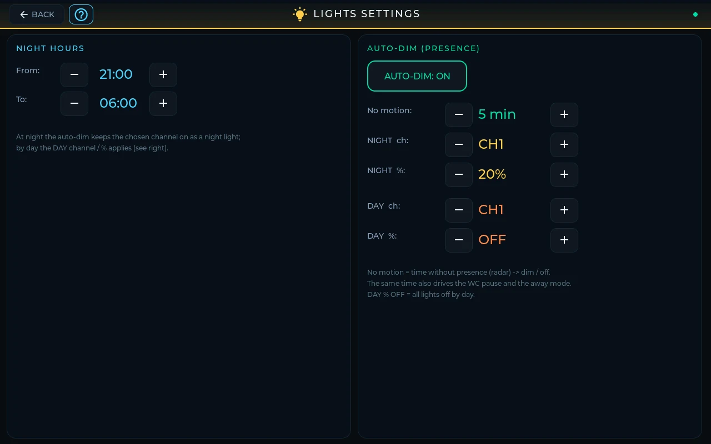
Night time: during these hours auto-dim uses the night light. Default 21:00–06:00.
Dim the lights automatically when nobody is in the vehicle (guard radar). Default ON.
Time without presence before dimming, 1–30 min (default 5 min). Also used for the WC pause.
Channel that stays on at night as a night light (default CH1) and its brightness 5–100 % (default 20 %).
Channel that stays on by day when nobody is home (default CH1) and its brightness; OFF = all lights go off by day.
How AUTO-DIM works: when nobody is there for the “No motion” time, only the NIGHT channel stays on at NIGHT % at night, and only the DAY channel at DAY % by day (with OFF, all lights go off by day). After 15 minutes away this light goes off too. When someone comes back, the previous state is restored.
6Heater (diesel heater)
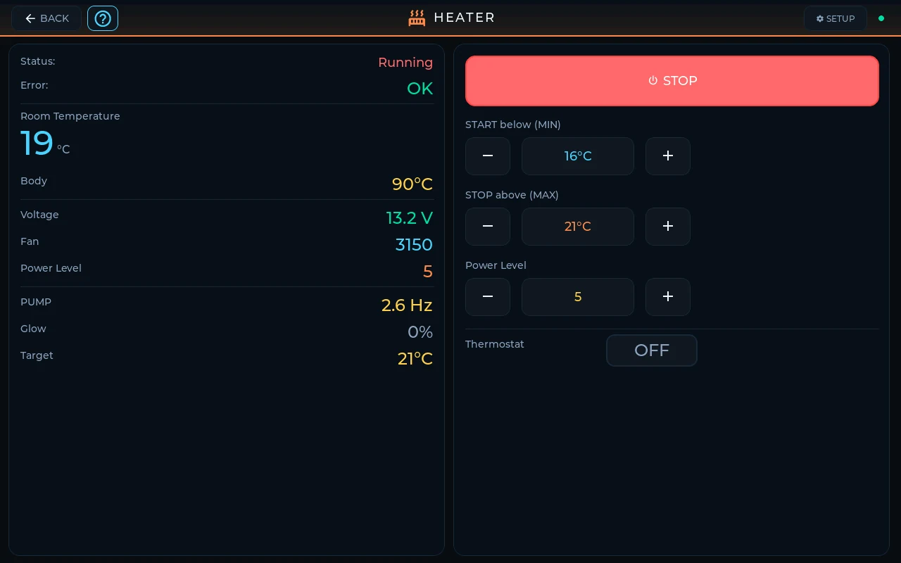
Off / Starting / Ignition / Running / Cooldown / Fault, errors, room and heater temperature, voltage, fan, power, pump, glow plug.
Start or stop the heater by hand.
With the thermostat on, the heater starts when the room drops to this temperature (5 °C to MAX−1, default 16 °C).
The heater stops when the room reaches this temperature (MIN+1 to 30 °C, default 21 °C).
Heating power for manual mode, 1–10 (default 5); also the slider on the home screen. Remembered for the next start.
The display keeps the room temperature between MIN and MAX – with automatic power. Default OFF.
Heater settings (save with SAVE).
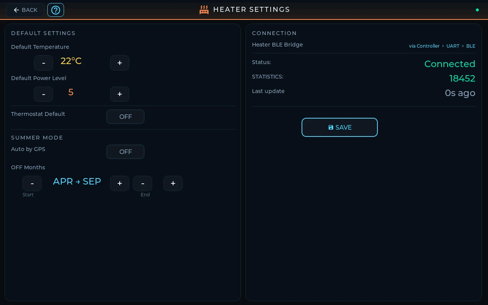
Starting power if the heater does not report its own last level, 1–10 (default 5).
In the summer months the thermostat does not start the heater by itself (STOP and manual start still work). Default OFF.
Period of summer mode, default April – September.
Saves the heater settings.
- The room temperature for the thermostat comes from the living-area sensor (as on the screensaver).
- Automatic power: with the thermostat on, the heater runs at level 10 at MIN and is turned down step by step to level 1 as it approaches MAX (at most one change per minute). It only stops if the room still rises above MAX at level 1. This way the heater starts and stops much less often.
- With the thermostat on, a manual start/stop is taken over again by the thermostat after about 1 minute. For purely manual operation, switch the thermostat off.
- If the heater switches itself off because of a fault, the thermostat does not restart it – only a manual start does.
- 12 V automatic: START switches the 12 V on, waits for the Bluetooth connection (max. 90 s, otherwise “NO BT”) and starts. STOP lets the heater cool down completely; 2 minutes after “Off” the 12 V is disconnected (display “CUT m:ss”). The 12 V is never disconnected while running or cooling down.
- Flame and overheating protection is handled by the heater itself.
7Water
- Fresh and waste water levels in percent and litres on the STATUS card of the home screen (tank size 60 L each).
- Buzzer alarm at fresh water ≤ 15 % and waste water ≥ 85 % (chapter 18).
- Pump via the PUMP tile, drain valves under CONTROLS (chapter 4).
Frost protection (automatic)
If the temperature of the fresh or waste water drops to 3 °C, the system opens both drain valves so that nothing freezes. They only close again when both tanks are back above 5 °C. After frost protection, refill the tanks.
8Roof fans
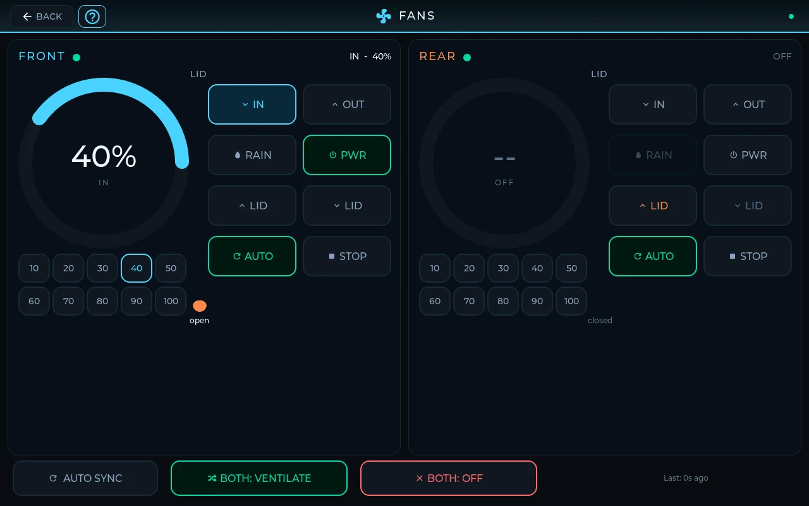
Speed in 10 % steps. If the fan is running, it changes immediately; otherwise it is remembered for the next start.
Direction in (fresh air) / out (exhaust) – starts the fan.
Rain mode on/off (only when the fan has power).
OFF ↔ STANDBY (power on, not blowing).
Lid open/closed (about 19 s). A second press while it moves stops the lid.
The lid adjusts itself to suit the speed.
Fan to STANDBY.
Flow-through: front in 50 %, rear out 50 %, lids open.
Both off, lids closed.
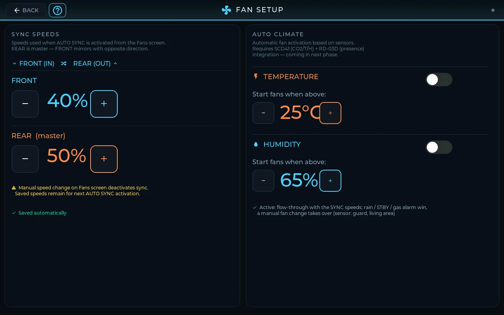
Speeds for flow-through (front in, rear out), 10–100 %, default 40 % / 50 %. Also used by AUTO CLIMATE.
Flow-through starts when it is warmer inside than this value (15–40 °C, default OFF, 25 °C); ends 1 °C below it.
Flow-through starts at higher humidity (40–90 %, default OFF, 65 %); ends 5 % below it.
- If the lid is closed while the fan is running, the fan goes to STANDBY by itself.
- On a gas alarm the gas purge takes over the fans (chapter 20).
- AUTO CLIMATE only works when the fans are free. Rain, STBY and gas alarm take priority. If a fan is changed by hand, manual control takes over; the automation only starts again once the temperature or humidity has dropped.
9Levelling
Green dot = level (within tolerance), red = not level. PITCH = front-to-back tilt, ROLL = side-to-side tilt.
For each wheel, how many blocks or centimetres it needs to be raised (0 = green, 1–2 yellow, 3–4 orange, 5 and more red). When the vehicle is level, the buzzer sounds once.
Level settings, calibration and MPU orientation.
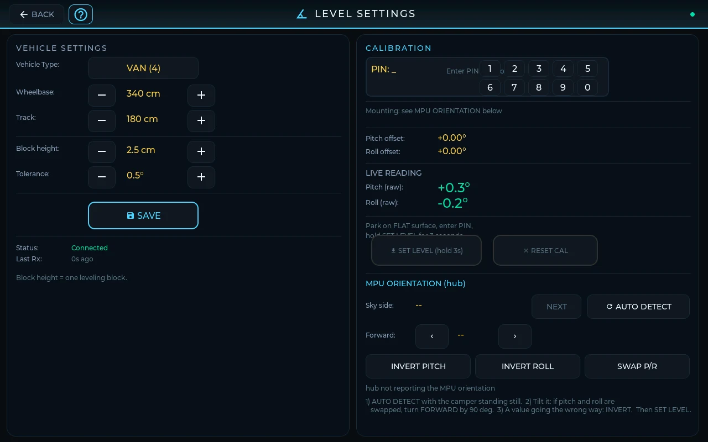
VAN (4 wheels) or MOTORHOME (6 wheels). Default VAN.
Wheelbase (default 340 cm) and track width (default 180 cm) for the block calculation, from 100 cm in steps of 10.
Height of one levelling block, from 0.5 cm in steps of 0.1 (default 2.5 cm).
When it counts as “level” (also for the STATUS tile and the buzzer), 0.2–3.0° (default 0.5°).
Calibration and MPU orientation are protected by the PIN (the same as for the alarm).
On a truly flat surface, hold SET LEVEL for 3 s → “✓ CALIBRATED!”. RESET CAL deletes the calibration.
For the installer only: AUTO DETECT finds which side of the board faces up; NEXT selects it by hand; Forward ◀ ▶ turns the driving direction in 90° steps; INVERT PITCH / INVERT ROLL / SWAP P/R correct the axes.
The levelling screen stays open even when the display is not touched – handy while driving onto the blocks.
Calibration: park the vehicle on a truly flat surface, enter the PIN at the top right in SETUP, hold SET LEVEL for 3 seconds → “✓ CALIBRATED!”. The calibration is saved as soon as you leave the screen with BACK. After SET LEVEL the PIN is locked again.
MPU orientation order: AUTO DETECT → raise the front of the vehicle: PITCH must change (otherwise turn Forward by 90°), and the block display must show the front as “higher” (otherwise INVERT PITCH); raise the left side → left “higher” (otherwise INVERT ROLL). Finally, on a flat surface, SET LEVEL.
10Battery
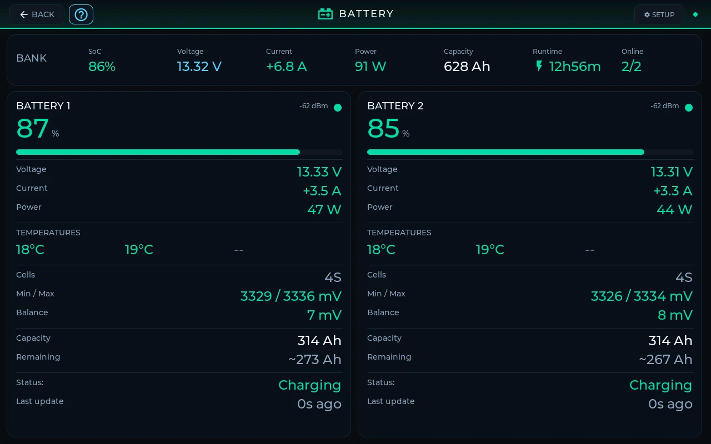
Both lithium batteries together: SoC, voltage, current (+ charging / − discharging), power, capacity. Runtime: time until empty (red below 2 h, orange below 6 h) or until full; smoothed over about 2 minutes. Online: how many batteries are sending data (2/2 = all OK).
State of charge, voltage (red outside 12.0–14.6 V), current, power, temperatures (blue below 5 °C, green up to 45 °C, orange up to 55 °C, red above), cells min/max and Balance (green below 20 mV, yellow below 50 mV, otherwise red), remaining capacity and status.
Battery settings (save with SAVE).
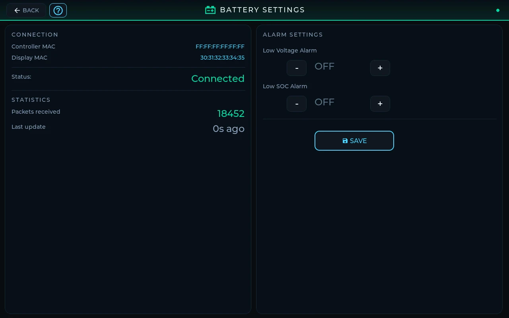
Buzzer alarm when the weaker battery drops to this voltage, 0–15.0 V in steps of 0.5 (0 = off). Default OFF.
Buzzer alarm when the battery bank's state of charge drops to this value, 0–50 % in steps of 5 (0 = off). Default OFF.
Saves the battery settings.
Low-temperature, under-voltage and over-current protection is handled by the batteries' own battery management system (BMS).
11Solar, alternator and starter battery
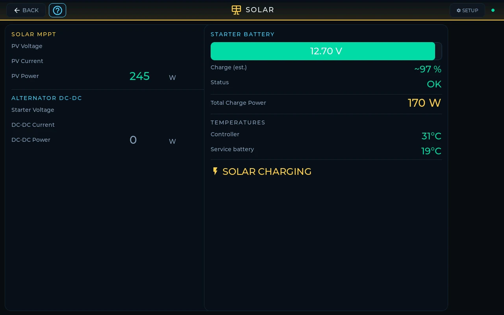
Voltage, current and power of the solar panels.
Charging from the alternator while driving (current and power).
Voltage and estimated charge. Status ALTERNATOR = engine running and charging, OK from 12.4 V, LOW 12.0–12.4 V, CRITICAL below 12.0 V. The percentage is only meaningful when the battery is at rest.
Everything flowing into the living-area batteries.
Charge controller and living-area battery.
The solar settings only contain connection information; there is nothing to set.
12PWR – battery protection and shore power
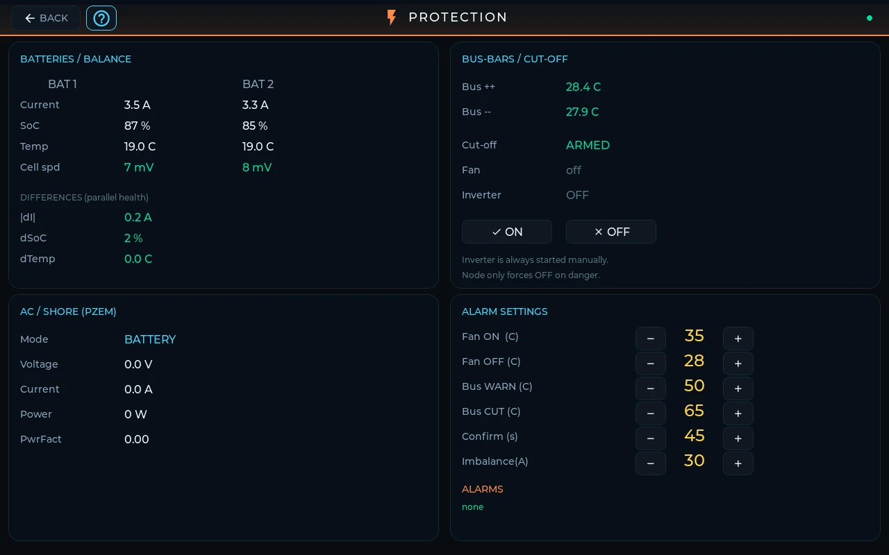
Current, state of charge, temperature and cell spread of both batteries and their differences. Large differences point to a poor connection or a weaker battery.
Temperature of the bus bars. ARMED = normal, WARNED = warm (alarm only), TRIPPED = the inverter was switched off for protection.
Inverter on/off (in STBY, ON asks for the PIN first).
Shore power or battery mode, mains voltage, current, power.
Fan ON 10–60 °C (35), Fan OFF 5–50 °C (28), Bus WARN 30–90 °C (50), Bus CUT 35–100 °C (65), Confirm 10–120 s (45), Imbalance 5–100 A (30). Saved immediately and sent to the protection module, which keeps working without the display.
13Security (alarm) and gas siren
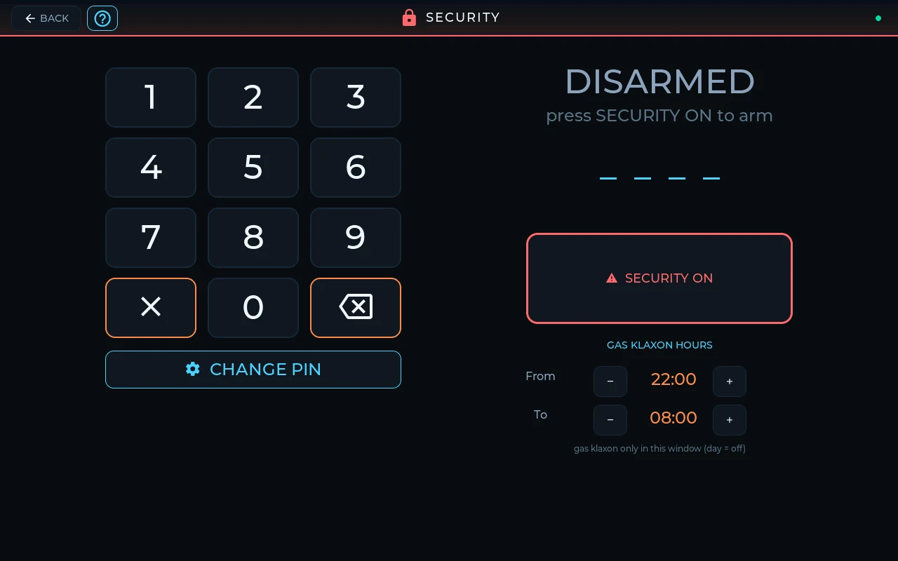
Arms the alarm. Display “ARMING…” – leave the vehicle; it is armed as soon as nobody is detected any more.
Disarming: enter the 4-digit PIN (✕ clears, ⌫ deletes the last digit).
Enter the current PIN, then the new PIN → “✓ PIN CHANGED”. Factory PIN: 0000.
From/To (default 22:00–08:00): the loud gas siren only sounds in this time window and stays quiet during the day. The warning for smoke, hydrogen, CO and CO2 is not affected.
- Entering an armed vehicle: the buzzer beeps and a countdown of 15 seconds runs (“… s to klaxon!”) – the PIN pad opens automatically.
- Without the PIN, after 15 seconds the klaxon and siren sound for as long as someone is detected in the vehicle.
- If the person leaves the vehicle (without the PIN), the alarm stops by itself after about 25 s and the vehicle stays armed – if someone comes again, it starts over.
14Guard – air and presence
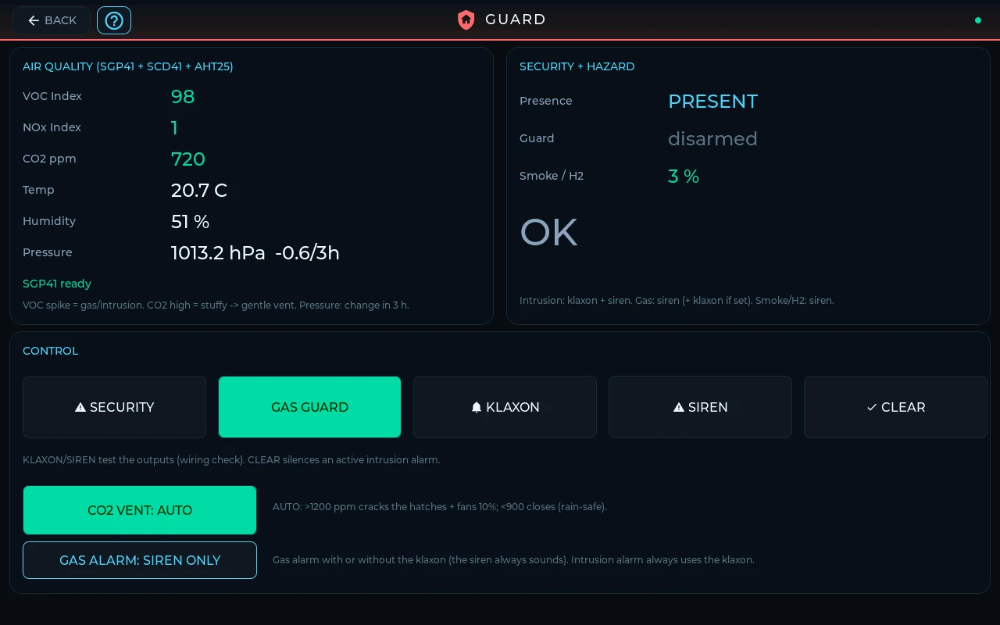
VOC index (orange from 150, red from 250), NOx index, CO2 in ppm (orange from 1000, red from 1500), temperature and humidity. After switching on, the sensor needs a few minutes (“warming up”).
Air pressure in hPa and its change over the last 3 hours. Orange from a fall of 2 hPa, red with “STORM” from a fall of 4 hPa in 3 h. The trend needs about 1 hour of data first; while driving and for 10 minutes after stopping, the history starts again.
PRESENT / empty (the radar also detects people sitting still). Smoke / H2 from the battery compartment.
Gas/VOC monitoring on/off – independent of the intruder alarm. Green = active.
Test the outputs. CLEAR: a gas/CO alarm is acknowledged immediately; an intruder alarm only with the PIN.
Default AUTO: from 1200 ppm both roof hatches open and the fans run gently (10 %); below 900 ppm or when it rains they close again. Only works when the fans are not being used by hand.
Whether the klaxon also sounds in addition to the siren on a gas alarm. The intruder alarm always uses the klaxon.
What sounds when: intruder = klaxon + siren, gas = siren (+ klaxon if selected), smoke / H2 = siren.
15Radar – setting up presence
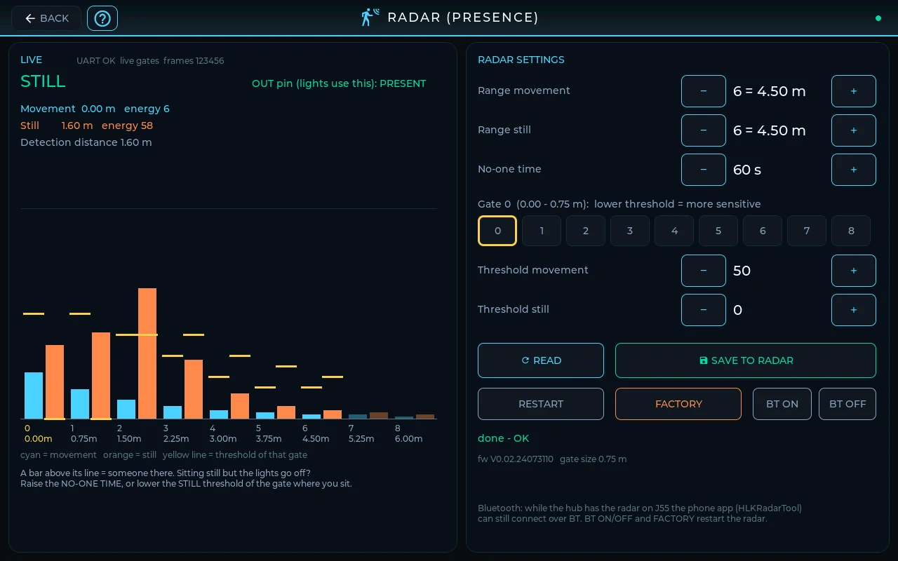
NOBODY / MOVING / STILL, distance and strength. Below that, for each zone (0.75 m each from the sensor), two bars: cyan = movement, orange = still. The yellow line is the zone's threshold: a bar above its line means “someone is there”.
What the lights and automatic functions actually see (PRESENT / nobody).
Up to which zone people are detected. The radar sees through walls – too far = passers-by outside are detected. Recommendation: just over the inside length.
How long “PRESENT” remains after the last detection. Recommendation 60–90 s.
Tap a zone (0 … 8), then threshold −/+. Lower = more sensitive.
Writes the values to the radar (orange = changed, not saved yet). Below: “done - OK”.
Read the values again / restart the radar / factory settings (tap twice).
The radar's Bluetooth (for the manufacturer's app).
How to set it up
- Empty vehicle: go outside and watch the bars for one minute. No bar may go above its line. If a zone jumps above it with nobody there (fan, vibration, curtain), set its threshold about 10 above the highest bar.
- Sit still: sit in your usual place and stay still for one minute. Note the zone with the orange bar and set its still threshold 10–15 below the bar.
- No-one time to 60–90 s, then SAVE TO RADAR.
If the lights go off although someone is sitting still: increase the No-one time or lower the still threshold of that zone.
16AWAY LOADS – loads when nobody is home
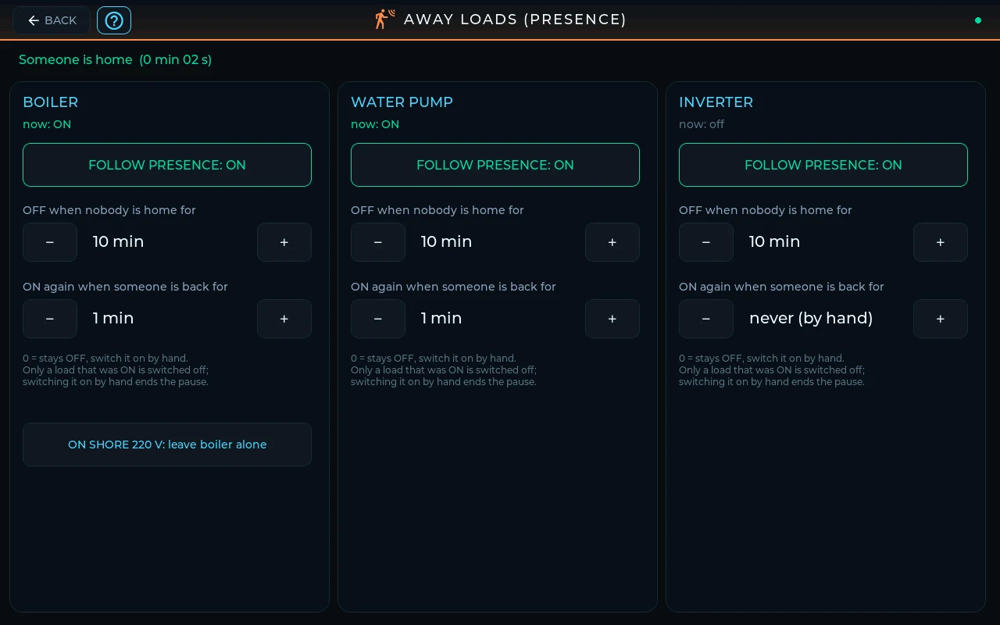
Whether someone is there right now and since when.
Whether this load is switched automatically at all. Default ON.
Time without presence until it is switched off. Default 10 min.
Time with presence until it is switched on again; never (by hand) = stays off. Default: boiler, pump 1 min; inverter never.
Do not switch the boiler off when on shore power. Default: leave boiler alone.
- Only what was on is switched off. What was off before stays off.
- If a load is switched on by hand while nobody is home, the automation leaves it alone.
- The card shows “now: OFF (nobody home)” when the automation has switched it off.
- In STBY and without radar data nothing is switched. During frost protection the pump stays off.
17Audio

Shows the active sound preset (own change = CUSTOM).
Opens the night volume limit.
Sound at 80 Hz / 250 Hz / 1 kHz / 4 kHz / 12 kHz – turn or −/+, −10 … +10 (about ±6 dB), default 0.
FLAT, ROCK, POP, JAZZ, CLASS., METAL, REGGAE, DISCO, BASS+, VOICE. Default FLAT.
Subwoofer volume 0–100 %, default 50 %.
Previous track / play-pause / next track on the connected phone.
Drag the dot: left–right and front–rear, each −10 … +10; RECENTER = centre.

Night limit on or off (default OFF).
Night window, default 22:00–07:00.
Maximum volume at night, 0–100 % (default 60 %).
Saves the night limit.
Volume and mute are in the bar below the header; audio power is on the speaker button.
18Settings and display
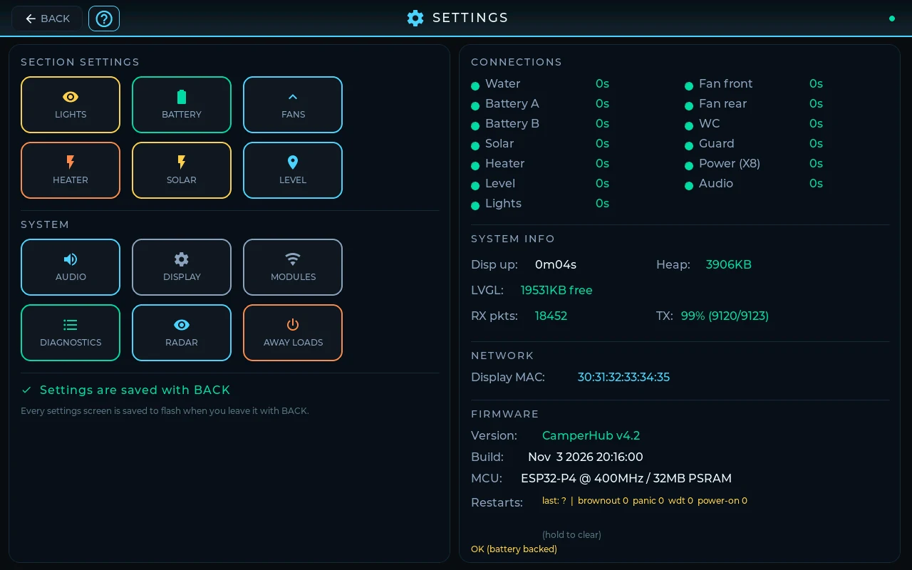
LIGHTS, BATTERY, FANS, HEATER, SOLAR, LEVEL as well as AUDIO, DISPLAY, MODULES, DIAGNOSTICS, RADAR (chapter 15) and AWAY LOADS (chapter 16).
One dot per module (Water, Battery A/B, Solar, Heater, Level, Lights, Fan front/rear, WC, Guard, Power (X8), Audio) – green with the seconds since the last data packet, red = no connection.
System info, display MAC and firmware version.
When the display last restarted and how often – BROWNOUT = power supply too weak, PANIC / WATCHDOG = software fault (please tell the installer). A long press resets the counters.
“RTC: OK (battery backed)” green = the clock keeps running when the power is off (CR1220 coin cell in the display); “RTC: time lost - set the clock” yellow; “RTC: not found” = clock chip not answering. Change the coin cell about every 3–5 years.
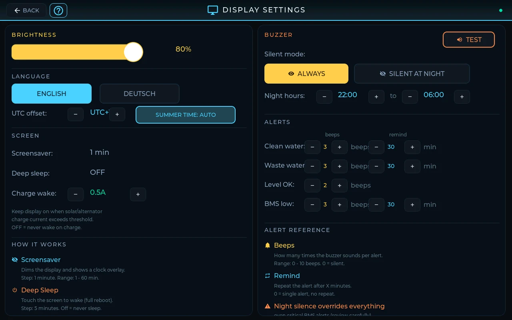
Screen brightness 10–97 %, takes effect immediately (default 80 %).
ENGLISH / DEUTSCH (default ENGLISH).
Time zone (winter time), UTC−12 … +14. Germany: UTC+1.
Switches to summer time automatically (+1 h, last Sunday in March to last Sunday in October). Default AUTO.
Fixed: dims after 1 min, never fully off (display only).
The display stays bright as long as more than this charging current flows, 0–5.0 A in steps of 0.5 (0 = OFF). Default 0.5 A.
Test beep of the buzzer.
ALWAYS = buzzer always; SILENT AT NIGHT = silent during night hours (even for important alarms!). Night hours default 22:00–06:00.
For each alarm: beeps (0 = off) and remind (repeat in minutes, 0 = once). Clean water ≤ 15 %, waste water ≥ 85 %, level OK (once), BMS low (≤ Low SOC Alarm).
19Diagnostics and modules
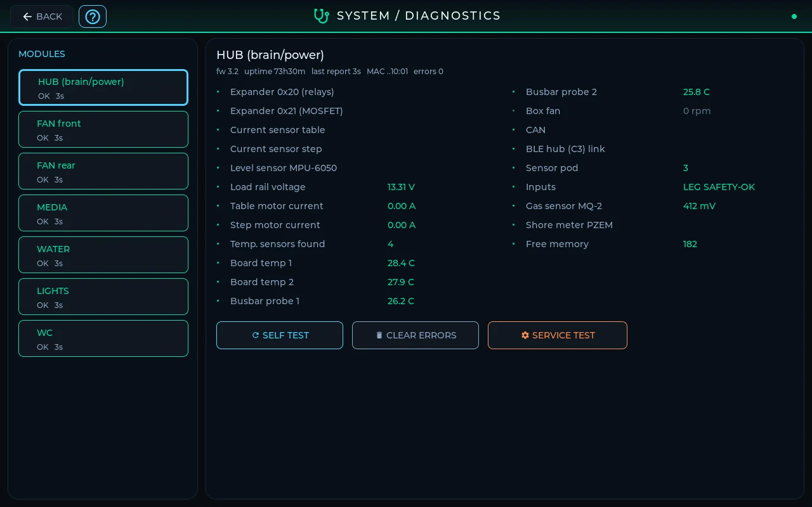
Every module (HUB, fan front/rear, MEDIA, WATER, LIGHTS, WC) reports every 30 seconds with OK / WARNING / ERROR, or OFFLINE after 90 s. Tap a module to see the individual checks.
HUB shows a detailed list (about 200 values in groups) on several pages – page through with ◀ ▶. While the screen is open, the values are refreshed every 5 seconds.
SELF TEST starts a self test, CLEAR ERRORS clears the error list.
Only with the security PIN, for specialists: switches single outputs on briefly (2 s). Motors only after a second tap – careful, the motor will move!
Music pauses about 3 s.
Restarts the display.
Sensors gone for about 5 s.
Shows the event log.
20Automatic functions at a glance
| Automation | What happens |
|---|---|
| Away mode | boiler, pump and inverter are switched off when nobody is home and back on when someone returns – times adjustable per load (chapter 16) |
| Auto-dim | lights off or night light when nobody is there (chapter 5) |
| Energy saving | after 15 min with nobody home, idle modules go into a power-saving mode. Presence wakes everything within a few seconds. While music is playing, the audio system stays awake. |
| Frost protection | drain valves open at a water temperature of ≤ 3 °C (chapter 7) |
| Gas purge | on a gas alarm: rear fan in 100 %, front fan out 100 %, lids open – even in rain. Afterwards fans off and lids closed |
| CO2 ventilation | gentle ventilation from 1200 ppm (chapter 14) |
| Storm warning | STORM on the INFO card when the air pressure falls 4 hPa or more within 3 hours (chapter 14) |
| Wake-up alarm | rings the siren or buzzer at the set time and days (chapter 2) |
| AUTO CLIMATE | flow-through when temperature or humidity is too high, if switched on (chapter 8) |
| Summer time | automatic change at the end of March / end of October (chapter 18) |
| Shore charger | with CHARGER AUTO: off at 95 %, on again below 75 % |
| Boiler | only ON / OFF by hand, optionally via the away automation |
| Heater 12 V | switched on automatically and disconnected 2 min after cooling down |
| Intruder alarm | 15 s countdown, then klaxon + siren as long as someone is there; then armed again (chapter 13) |
| Inverter protection | switches off when the bus bar is too hot |
21If something does not respond
| Problem | Solution |
|---|---|
| Display does not respond to touch | Tap the display once (screensaver). If that does not help: disconnect the display power for 10 seconds and switch it on again. |
| Buttons do nothing, a tap opens the PIN pad | STBY is active – end it with the PIN (chapter 3). |
| A value shows “--” or is grey | The module is not sending. Check under Settings → DIAGNOSTICS; if needed, restart it under MODULES. |
| Wrong time or “set clock – tap” (yellow) | The display clock has a coin cell (CR1220). If the time is wrong after a power cut, the cell is empty or missing: set the time (the “SET DATE / TIME” window opens by itself, otherwise tap the clock on the INFO card) and check Settings → “RTC:”. Under Display, check time zone UTC+1 and SUMMER TIME: AUTO. |
| No sound | Is the speaker button in the header green? Mute off? Phone connected via Bluetooth? |
| Lift table does not move | Unfold the support leg (“leg: OPEN ✓ ready”), end STBY. |
| Display restarts by itself | Look at Settings → Restarts. BROWNOUT: power supply or cable to the display too weak (short, thick cable, 5 V / 2 A). PANIC/WATCHDOG: tell the installer. |
| Lights go off although someone is there | Set up the radar: increase the No-one time, lower the still threshold (chapter 15). |
| Heater does not start | Display “NO BT”: no connection to the heater – press START again. If a fault is shown: fix the fault at the heater, then START by hand. |